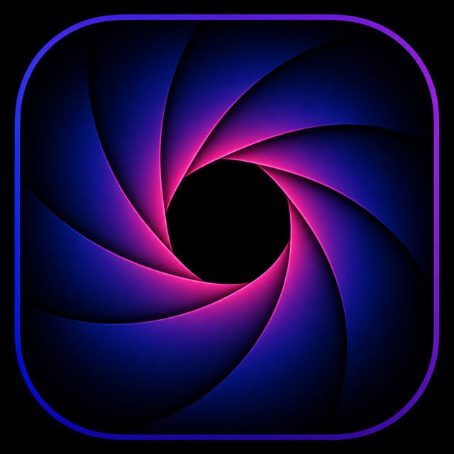

Кадр
Запись экрана, таймлайн и экспорт — для понятных product-видео.

Placeholder · timeline / export
Возможности
- Запись экранаОбласть или дисплей, с микрофоном и системным звуком по необходимости.
- ТаймлайнМонтаж без ухода в тяжёлый NLE.
- ЭкспортГотовый ролик для шэринга.
- Neon irisЗнак Кадра — часть бренда suite.
Нужны ещё скриншоты?
Возьми Щёлк отдельно или suite Щёлк.Кадр.